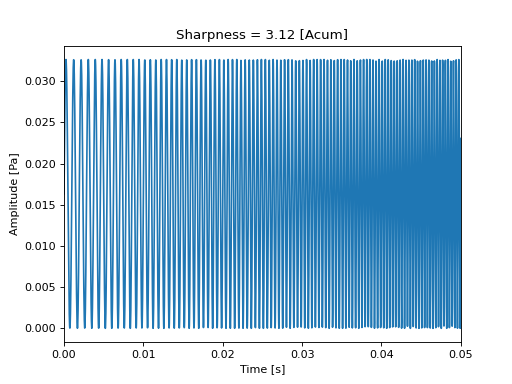

- sharpness_din_freq(spectrum, freqs, weighting='din', field_type='free')[source]
Returns the sharpness value
This function computes the sharpness value along time according to different methods.
- Parameters:
spectrum (array_like) – A RMS spectrum.
freqs (array_like) – Frequency axis.
weighting ({'din', 'aures', 'bismarck', 'fastl'}) – Weighting function used for the sharpness computation. Default is ‘din’
field_type ({'free', 'diffuse'}) – Type of soundfield corresponding to spec_third. Default is ‘free’
- Returns:
S – Sharpness value in [acum]
- Return type:
numpy.array
See also
sharpness_din_from_loudnesssharpness computation from loudness values
sharpness_din_stsharpness computation for a stationary time signal
sharpness_din_tvsharpness computation for a non-stationary time signal
sharpness_din_persegsharpness computation by time-segment
Notes
- The different methods account for the weighting function applied on the specific loudness values:
DIN 45692 : weighting defined in the standard
Aures
Bismarck
Fastl
References
[DIN45692]Measurement technique for the simulation of the auditory sensation of sharpness, 2009
Examples
>>> from mosqito.sq_metrics import sharpness_din_freq >>> from mosqito.sound_level_meter import spectrum >>> import matplotlib.pyplot as plt >>> import numpy as np >>> fs=48000 >>> d=0.2 >>> dB=60 >>> time = np.arange(0, d, 1/fs) >>> f = np.linspace(1000,5000, len(time)) >>> stimulus = 0.5 * (1 + np.sin(2 * np.pi * f * time)) >>> rms = np.sqrt(np.mean(np.power(stimulus, 2))) >>> ampl = 0.00002 * np.power(10, dB / 20) / rms >>> stimulus = stimulus * ampl >>> spec, freqs = spectrum(stimulus, fs, db=False) >>> S = sharpness_din_freq(spec, freqs) >>> plt.plot(time, stimulus) >>> plt.xlim(0, 0.05) >>> plt.xlabel("Time [s]") >>> plt.ylabel("Amplitude [Pa]") >>> plt.title("Sharpness = " + f"{S:.2f}" + " [Acum]")
(Source code, png, hires.png, pdf)

{kind=link}
{kind=link}